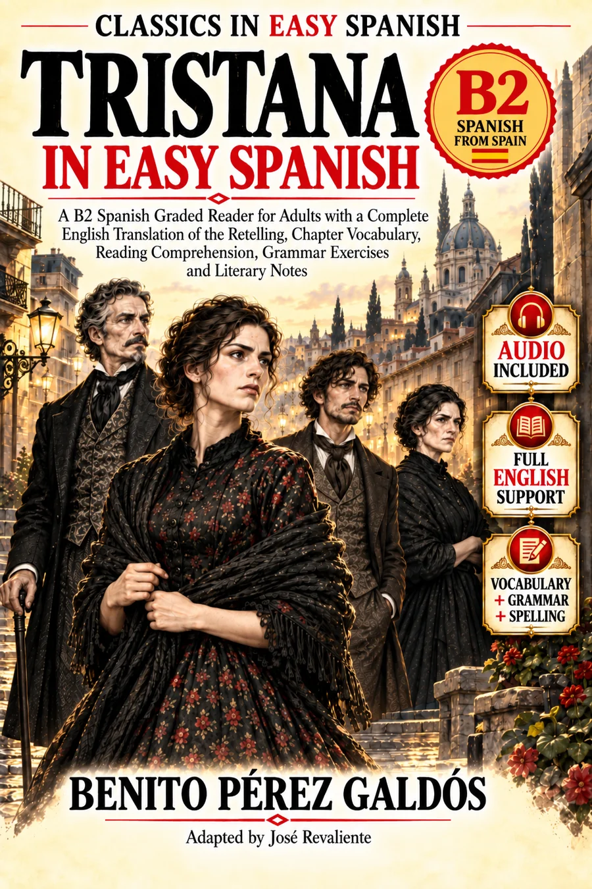

Audio and study materials to accompany the complete adult B2 retelling of Benito Pérez Galdós’s Tristana.
Benito Pérez Galdós
Adapted by José Revaliente
Listen while following the same chapter in the book. Recordings are linked from Internet Archive; they are not stored on GitHub.
View the Internet Archive collection ↗. If a player fails to load, choose “Open MP3”. Availability and playback depend on the external host.
Choose the tools you need after reading; the literary story comes first.
145 contextual entries with English translations and Spanish definitions.
145 import-ready cards for spaced repetition.
Understand the story’s changing conflicts; plot spoilers.
Relationships, power and competing hopes; plot spoilers.
Reflective questions for all 29 original chapters.
A 33-page print-ready note-taking booklet.
First read a chapter in Spanish without interruption; then listen to the same chapter, review challenging words, and record one observation about the story. The timeline and character map contain spoilers and are best consulted after the relevant chapters.
The B2 level is an internal editorial assessment, not an official CEFR certification. This companion does not substitute for the book; the availability of the site does not establish that the book or its linked audio is publication-ready.